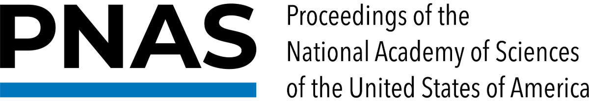
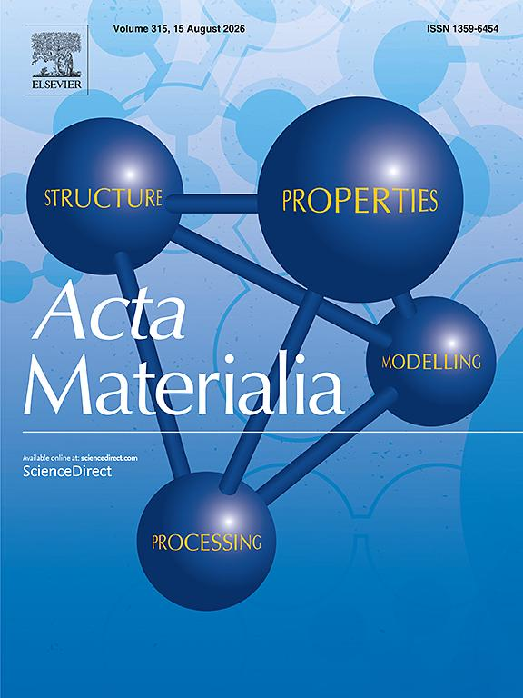
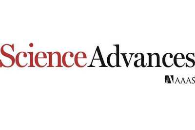
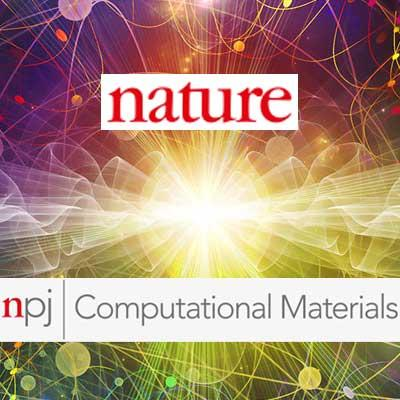

I develop multi-agent AI frameworks that integrate large language models with physics-based simulation for autonomous materials design and discovery. This work builds on a foundation in statistical mechanics, atomistic simulation, and the theory of defect kinetics in structural alloys.




My research addresses a central challenge in computational science: how to couple artificial intelligence with rigorous physical theory to accelerate the discovery and design of materials. At MIT, working with Prof. Markus Buehler, I develop LLM-driven multi-agent frameworks — Sparks, SciAgents, AtomAgents, and ProtAgents — in which specialized agents orchestrate molecular dynamics and density functional theory calculations, machine-learned interatomic potentials, and graph neural networks to autonomously generate hypotheses, execute simulations, and interpret results across materials and molecular systems.
My doctoral research at EPFL with Prof. William Curtin developed parameter-free, transition-state-theory descriptions of thermally activated dislocation processes — double-kink nucleation and kink migration — in BCC dilute and high-entropy alloys. By computing activation free-energy barriers for these rare events and validating the theory against large-scale molecular dynamics, this work established predictive, atomistically informed models of temperature- and strain-rate-dependent strength.
Together, these two lines of work define my research program: physics-grounded autonomous AI systems in which statistical mechanics, atomistic simulation, and machine learning operate as an integrated engine for scientific discovery.
Two complementary research thrusts: autonomous AI systems for scientific discovery, and predictive statistical-mechanics models of alloy strength.
Physics-aware multi-agent frameworks developed at MIT that execute the research cycle end to end — hypothesis generation, simulation, and analysis.
A multimodal, multi-agent system for fully automated scientific discovery. Sparks autonomously performs the entire research cycle — generating hypotheses, designing experiments, and analyzing results — and has uncovered previously unknown phenomena without human input.
Under review · arXiv 2025A modular multi-agent framework for novel hypothesis generation across scientific domains via intelligent graph reasoning. Agents retrieve domain knowledge, identify gaps, and propose new testable ideas to amplify research creativity.
Advanced Materials 2024 · MIT NewsA physics-aware, multimodal multi-agent system for autonomous alloy design. Couples LLMs with molecular dynamics and DFT engines to explore design spaces and optimize high-entropy alloy compositions, benchmarked against traditional workflows.
PNAS 2024 · MIT CEE NewsAn LLM-driven multi-agent platform for de novo protein design, integrating language models, structure prediction, and physics-based evaluation agents to generate functional protein sequences tailored to target properties.
Digital Discovery 2024Graph neural networks mapping atomic structure to site-specific properties, embedded in multi-agent workflows for data-driven, rapid exploration of alloy design spaces.
MRS Bulletin 2025Doctoral research at EPFL: parameter-free, statistical-mechanics theories of thermally activated dislocation motion in BCC dilute and high-entropy alloys.
Analytical theories of double-kink nucleation and kink migration on screw dislocations, yielding activation free-energy barriers for thermally activated flow without fitting parameters, validated against large-scale molecular dynamics.
Acta Materialia 2020 · 2021A predictive framework for the temperature- and strain-rate-dependent strength of BCC non-dilute and high-entropy alloys, in which screw dislocation kinetics control macroscopic yield.
Acta Materialia 2022 · 2025A transferable solute/screw-dislocation interaction energy parameter linking atomic-scale energetics to macroscopic solid-solution strengthening, from dilute to high-entropy compositions; complemented by analysis of edge dislocation glide barriers.
MSMSE 2019 · npj Comput. Mater. 2021Atomistic study of fracture mechanisms in defected alloys, including grain-boundary embrittlement of recrystallised tungsten and small-scale fracture of Laves phases, conducted at the Max Planck Institute for Sustainable Materials.
Acta Materialia 2023 · J. Mater. Sci. 202420 papers across leading materials, physics, and AI venues — including PNAS, Advanced Materials, and Acta Materialia.
I am currently on the academic job market, seeking faculty positions in computational science, materials science and engineering, and AI for science. I welcome inquiries regarding open positions, research collaborations, and speaking engagements.